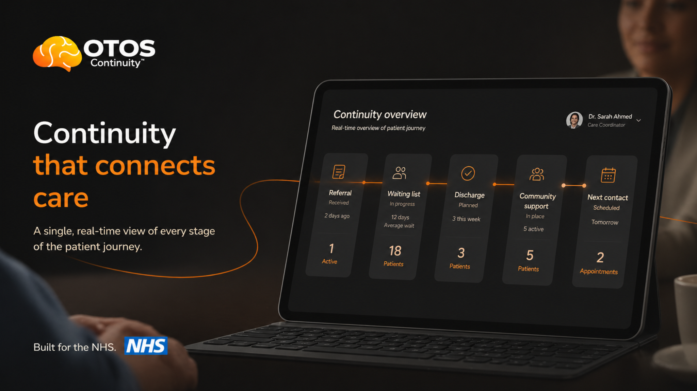

34%*
Median ADHD prevalence across addiction treatment cohorts. Royal College of Psychiatrists

The chaos, the addiction, the relapses, the shame — they weren’t failures of willpower or treatment. They are what happens when the underlying neurological condition of ADHD stays unresolved while services treat the visible addiction.
Median ADHD prevalence across addiction treatment cohorts. Royal College of Psychiatrists
Improved addictive-disorder outcomes after ADHD diagnosis and treatment. START study
Trial-end abstinence in ADHD + cocaine dependence. JAMA Psychiatry
Alcohol users also have mental health problems. Sun Network public figure
Estimated local Cambridge & Peterborough overlap cohort. Local planning estimate
*Rounded / median planning figures. Sources and caveats: Evidence & Sources →
I believe my addiction to alcohol was a direct result of not being medicated properly for ADHD. And I am not alone in that. One clinical study found a 61.3% improvement in addictive disorders once ADHD was properly identified and treated.
The system did not fail because nobody cared. It failed because nobody could see my whole journey, connect the pattern and intervene early enough around the real diagnosis. Too much was spent managing the addiction symptoms and the fallout, while the core ADHD condition stayed unresolved. That is why OTOS exists: to make the pattern visible earlier, before repeated crisis, repeated spend and repeated personal loss become the story. Each partner page includes a draft note you can edit and send back to Dean. Read on to see what I’m trying to do about it — and the simple support I’m asking for.The failure is not in the care — it is in the space between it.


Cambridgeshire County Council / public health lead? Open the Local Authority briefing →
People do not usually disappear because one service failed. They disappear because referral, waiting, discharge, community support and next contact are held in different places.
OTOS makes that between-space visible: one person, one continuity thread, enough signal for the right team to see the pathway is still alive.
The test is small and bounded: 50 people, 12 weeks, one named contact per partner. OTOS does not diagnose, prescribe, write back to EPRs or replace human judgement.
It is not another service. It is the continuity layer around the ones already doing the work.
OTOS holds the continuity thread across services so each partner can see the relevant continuity status — not another service's clinical notes.
Adults already touching addiction, recovery, crisis, hospital, GP, ADHD or community support — where co-occurring ADHD may be clinically relevant.
The next appropriate route is named: ADHD assessment, Right to Choose, CPFT, GP, recovery or community support. The referral is logged and visible.
The continuity thread shows whether the next step landed, stalled or needs human review. No extra clinical record is shared between services.
Surfaces early drift signals for human review, so a keyworker can re-engage someone before it becomes relapse, A&E, detox or another expensive escalation.
Illustrative pilot dashboard structure. Anonymous example threads. No identifying details. Sample metrics shown only to explain the evaluation view.

The next step is not a commitment or any kind of purchase decision. It is a partner conversation to see what's possible.